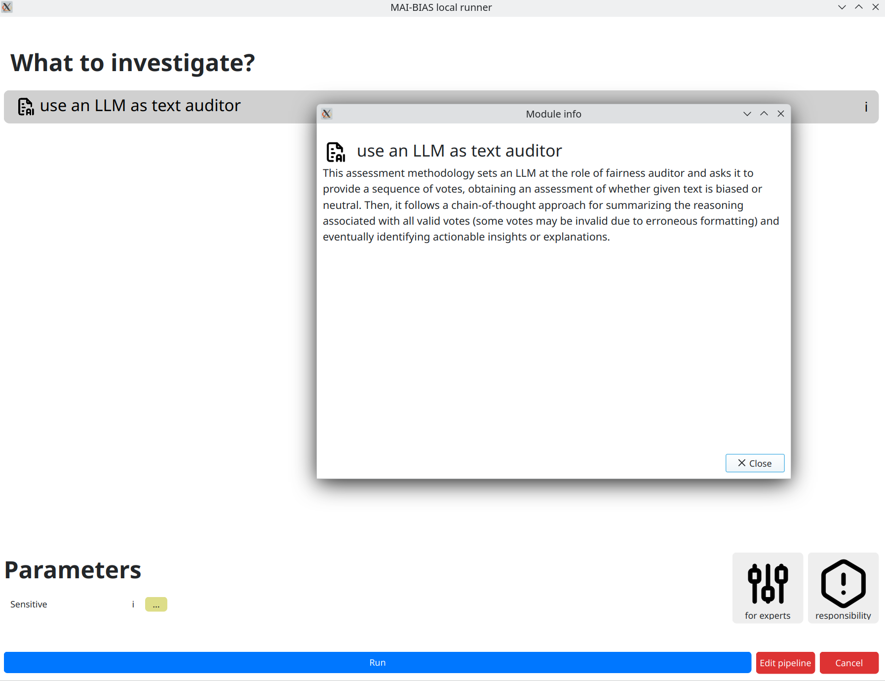
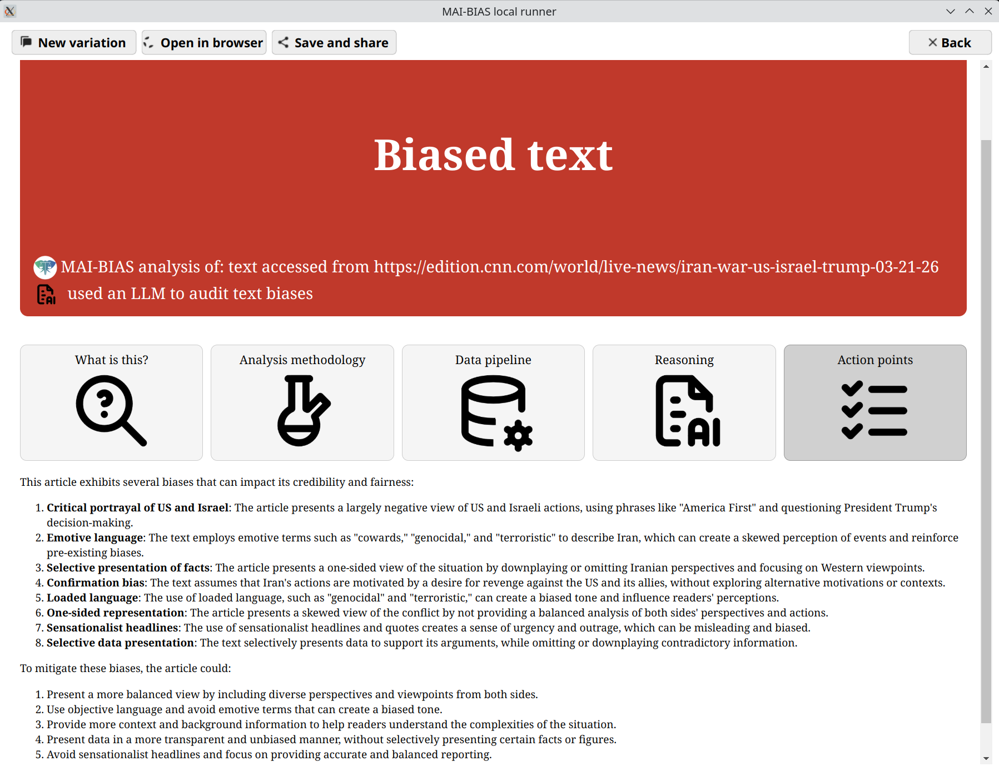

Requirements
This tutorial assumes that you have the MAI-BIAS toolkit already installed and a dataset available. Find installation instructions here, and we will use files from the bank dataset from our integration test data here. You can use any other url or -if you are running the local runner- local file too. Everything shown below is for the local runner.
To run an LLM you need to install ollama, which is a service for running LLMs privately in your machine, or in the cloud (cloud running is also secure). Find instructions in their website [here](https://ollama.com/download). You can create a free account to access cloud models. We are NOT in any collaboration with ollama.
Text
If you select to input text as your data, you can either write something yourself or paste a publicly
available web link to analyze (beware that some sites have protection against sharing such links).
In this case, we paste a new article about the 2026 war on Iran. That you can paste links can be learned
by clicking on the i button next to the dataset's text parameter.

Model
After clicking next, you are moved to selecting an LLM to run.
We will use llama3.2:latest, which is a model with 3 billion paramters and is locally hosted
by ollama mentioned in the requirements above. Install this model through ollama and you are ready to use
the LLM module. The default model and address where ollama runs are normally hidden, but here we clicked
on for experts to be able to change them. Different models may create different assessments.
The module's information alongside instructions to set up ollama can be foun by clicking the
i next to the module name.

Use the model as an auditor
We next use the select language model as a fairness auditor.
Details of how this works are described in the module's
information, which is shown by clicking on the i button. Briefly, a more robust
analysis is obtained by making many letting the model cast several votes on a verdict,
accompanied by explanation. Then, factuality is improved by keeping only the majority vote and meshing
together only contributing explanations.

Results
After clicking next a progress bar shows the voting process. Once that finishes,
an outcome like the one below is presented. This may vary slightly if you rerun the model, but
the verdict and main areas of focus remain largely the same. The final result has both the model's
self-reported reasoning, as well as action points on how the text should
be adjusted to mitigate bias.
An interactive version of these results can be found here.
